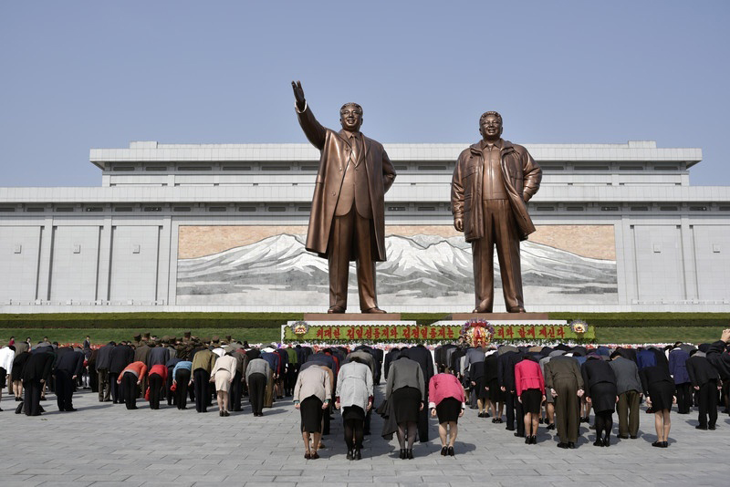

| На главную | Япония | Нидерланды | Германия |
|---|
Государство в Восточной Азии, занимающее северную часть Корейского полуострова и прилегающую часть материка. На севере КНДР граничит с Китаем, на северо-востоке - с Россией, на юге - с Республикой Кореей. С востока омывается водами Японского моря, на западе - Желтого. Стране принадлежит ряд небольших островов в Западно-Корейском заливе.Общая площадь КНДР - 120,5 тыс. кв. км.
Умеренный муссонный, сравнительно суровый. Сезонные различия проявляются очень резко - лето на территории страны мягкое и теплое, а зима - холодная и сухая. Осадков выпадает от 800-1000 мм в районе Пхеньяна и восточного побережья до 1500-2000 мм в год в горных районах. Максимум осадков приходится обычно на период муссонов (середина лета) и позднюю осень. Зимы здесь малоснежные и нередко очень ветреные, а воздух сух и прозрачен.
Зимой проникающий сюда холодный континентальный воздух с горных районов азиатского материка приносит сухую, ясную и холодную погоду с температурами до -14°С, а в горных районах - ниже -18°С (средний показатель колеблется в районе отметки -4°С на юге и -8°С - на севере). Однако холодные периоды зимой нередко перемежаются с теплой погодой. Летом погода определяется циркуляцией океанических воздушных масс, приносящих обильную влагу, преобладающая средняя температура в этот период - +18-22°С.
Кулинария Северной Кореи в идеале мало чем отличается от южнокорейской и несет в себе множество элементов кухни соседних стран. Характерным элементом местной кулинарии является её поразительная простота - смешивается все и вся, в ход идут самые обыденные продукты, а способы обработки также очень незатейливы. Хорошо заметно и явное отличие кулинарных традиций в разных регионах страны, что объясняется иными природно-климатическими условиями и влиянием соседних народов.
Основа местной кухни - рис во всех его видах и способах приготовления, причем его роль в силу некоторых местных условий настолько велика, что во многих заведениях просто нет блюд без этого злака. Наиболее популярные блюда - пресная рисовая каша "пап"; обычный отварной рис без соли, масла и специй; рисовые биточки; отбивные рисовые хлебцы "чхальток" или "тток"; особый плов "пибимпап"; подаваемый к вареному рису суп "кук"; сэндвич из риса, овощей и омлета "кимпап"; рис с холодными овощами, пастой из красного перца и яичницей-глазуньей и др. Рис здесь может быть простой, кислый, терпкий, сладкий, с разнообразными добавками, специями и наполнителями.
В стране практически не пьют чая и кофе - местные их аналоги более напоминают чуть подкрашенную воду. Главным повседневным напитком является обычная кипяченая или минеральная вода (чаще всего местного разлива и негазированная), рисовый или ячменный отвар, а также разнообразные отвары и настои трав, которые корейцы и называют чаем: из женьшеня - "инсамчха", из арахиса - "танкончха", из имбиря - "сэнганчха", из корицы - "кйепхичха", цитрусовый сироп - "ючжачха" и др. Причем после еды ни чай, ни отвары не пьют - за столом обычно присутствуют только спиртные напитки, поэтому в случае пристрастия к обычному чаю или кофе лучше их везти с собой и просить заваривать отдельно.
В самом центре Пхеньяна, на холме Мансу, расположен монументальный скульптурный ансамбль, включающий памятники вождям Ким Ир Сену и Ким Чен Иру, и Музей корейской революции. Колоссальные статуи Великих Вождей высотой около 180 метров окружены скульптурными группами, символизирующими историю революционной борьбы корейского народа. Это место паломничества местных жителей и гостей города.
Монумент Мансудэ – обязательная часть программы посещения Пхеньяна для любого туриста и официальной делегации. Место мощное, сразу создает правильный настрой для дальнейшего путешествия по КНДР.
Построенная в 1982 году по образцу Парижской триумфальной арки из блоков белого гранита, Триумфальная арка в Пхеньяне прославляет роль Ким Ир Сена в борьбе с японской оккупацией в 1925 - 1945 годах.
Гранитный обелиск в столице КНДР, установленный в 1982 году к 70-летию Ким Ир Сена. Это второе по высоте сооружение в Пхеньяне. Скульптурную композицию венчает факел, изготовленный из красного (рубинового) стекла и символизирующий идеи Чучхе. Благодаря установленному в нем особому осветительному прибору, ночью можно увидеть, как он пылает. Внутри монумента есть лифт, с помощью которого можно подняться на смотровую площадку наверху. К югу и северу от монумента устроен сквер, в котором расположены ещё 6 скульптурных групп из белого камня (по три с севера и с юга от монумента), изображающие трудящихся различных профессий, военных и других представителей корейского народа. Каждая скульптурная группа имеет своё название.
Усыпальница Ким Ир Сена и Ким Чен Ира.Напротив мавзолея, на горе Тэсон находится Мемориальное кладбище революционеров, на котором похоронена жена Ким Ир Сена и мать Ким Чен Ира. Вместе мавзолей и кладбище составляют единый комплекс. Великий Вождь товарищ Ким Ир Сен любил работать в Кымсусанском мемориальном дворце, где помимо всего встречался с главами иностранных государств. Когда Президент скончался, Великий Руководитель товарищ Ким Чен Ир, обладающий высочайшей нравственностью и верностью Вождю сказал: "Нам не нужен такой большой Дворец без улыбки нашего Вождя!". С той поры существует Кымсусанский мемориальный комплекс, обращенный в мавзолей. При посещении дворца необходимо соблюдать формальный дресс-код, запрещено фотографировать и громко разговаривать.
Арка была воздвигнута в 2001 году в ознаменование указанной совместной декларации на проспекте Тхоньир у южного въезда в Пхеньян. На Арке изображена карта объединённой Кореи, поддерживаемая двумя кореянками в национальныхтрадиционных платьях. Под Аркой Воссоединения проходит четырёхполосное Шоссе Воссоединения,которое соединяет Пхеньян с Демилитаризованной зоной. В основании памятника изображены различные надписи в поддержку объединения и мира от различныхлюдей, организаций и наций.
Вверх